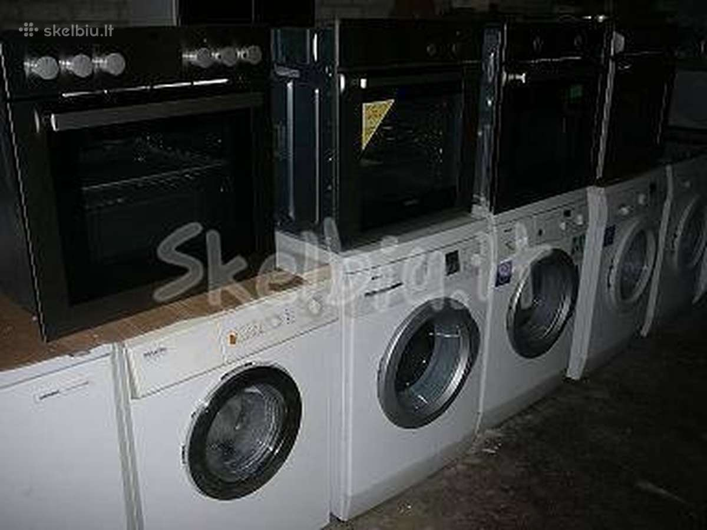

Internetinė parduotuvė Ermitazas.lt | Stambi buitinė technika
 Siekdami pagerinti jūsų naršymo kokybę, statistiniais ir rinkodaros tikslais šioje svetainėje naudojame slapukus. Paspaudę „Sutinku“ arba naršydami toliau sutiksite su slapukų įrašymu. Daugiau apie slapukus ir kaip jų atsisakyti – „Ermitažo“ slapukų politikoje SutinkuLapkričio 1 d. parduotuvės dirbs įprastu darbo laiku.
Didmeninė prekyba Prekės ir paslaugos Didmeninės prekybos kontaktai Užklausos pateikimas Paslaugos Pervežimo paslauga Pirkimas išsimokėtinai Įvažiuoji - perki Augalų priežiūra ir nuoma Atliekų rūšiavimas, tvarkymas Patalpų nuoma Dažų maišymas Kitos paslaugos Lojalumo programa ERMITAŽAS CLASSIC ERMITAŽAS GOLD Lojalumo kortelės aktyvacija Lojalumo programos ERMITAŽAS CLASSIC privatumo politika Lojalumo programos ERMITAŽAS GOLD privatumo politika Karjera Siūlome darbą CV anketa Praktika Kontaktai ERMITAŽO parduotuvės ARKORAMA Didmeninė prekyba Elektroninė prekyba Įmonės rekvizitai Pirkimo informacija Mokėjimo būdai Pristatymo sąlygos Slapukai Taisyklės Privatumo politika Garantijos ir grąžinimas Garantijos pratęsimas DUK Rezervacija:Informacija pirkėjui Akcijos Leidiniai Mokėjimo būdai Pristatymo sąlygos Pirkinių krepšelis Tuščias krepšelis 0 0 Prekių kategorijos Atsargų ruošimas žiemai Apdailos prekės Apšvietimas, elektra Baldai, tekstilė, interjeras Buitinė technika Inžinerinės komunikacijos Įrankiai, technika Laisvalaikis, turizmas Namų priežiūra Santechninė ir vonios kambario įranga Sodas, daržas Statybinės medžiagos Tvirtinimas, furnitūra Gaivieji gėrimai ir užkandžiai Buitinė technika Šaldikliai Garų puodai, troškintuvai Kokteilinės, trintuvai Plaktuvai Sulčiaspaudės, vaisių džiovyklės Virtuviniai kombainai Konservavimo indai ir kiti priedai Stiklainiai Dangteliai Konservavimo įranga, įrankiai Vienkartiniai šaldymo indeliai Vyno ruošimo įranga Maistinės plėvelės, folijos, maišeliai Daiktų laikymo krepšiai, dėžės, maišai Plastikiniai krepšiai, dėžės Pinti krepšiai, dėžės Medinės dėžės Kiti daiktų laikymo krepšiai, dėžės Maisto ruošimas Puodai Dangčiai Indai Prieskonių indai Indeliai maistui laikyti Birių produktų indai Maisto ruošimo įrankiai Šaukštai, samčiai, kiaurasamčiai Sieteliai, koštuvai Mentelės, plaktuvai Trintuvės, grūstuvai Atidarytuvai Valymo reikmenys Kempinės, šveistukai Popieriniai virtuvės rankšluosčiai Šluostės Buitinės pirštinės Nemaistiniai kibirai Virtuviniai rankšluosčiai Termometrai, hidrometrai Grindų dangos Laminuotos grindys Parketlentės PVC grindų danga, linoleumas Kiliminė danga Grindų dangų paklotas Grindjuostės Grindų sujungimo profiliuočiai Terasų danga Plytelės Akmens masės plytelės Keraminės plytelės Klinkerio plytelės Natūralaus ir dekoratyvinio akmens plytelės Mozaika Plytelių apdailos juostelės, kryželiai Dažai, lakai Emulsiniai dažai Emaliniai dažai Medienos dekoravimo, apsaugos priemonės Lakai Purškiamieji dažai Skiedikliai, tirpikliai Statybiniai pigmentai Dekoravimo priemonės, priedai Durys, langai, laiptai Durys Laiptai ir jų dalys Durų dalys Stoglangiai Rankenos, spynos Durų, langų furnitūra Baldų furnitūra Kabliukai, kabyklos Baldų rankenėlės Baldų spynelės Baldų, vežimėlių ratukai Baldų kojos, aksesuarai Atramos, padukai Baldų profiliuočiai, juostos, dalys Baldų lankstai Smulkioji furnitūra Sienų, lubų dangos PVC dailylentės MP dailylentės Medinės dailylentės Lubų dangos Kamštinė sienų danga PVC išorės sienų dailylentės Išorės sienų dailylenčių profiliuočiai PVC dailylenčių apdailos profiliuočiai Mediniai apdailos profiliuočiai Lubų dangų apdailos profiliuočiai, elementai MP dailylenčių apdailos profiliuočiai Tapetai Viniliniai tapetai Popieriniai tapetai Dažomi tapetai Fototapetai Lipnios dekoracijos Skysti tapetai Kiti tapetai Stalviršiai, palangės PVC palangės LMDP palangės Metalinės palangės Medinės palangės Stalviršiai ir jų dalys Lemputės Liuminescencinės lemputės Halogeninės lemputės Šviesos diodų lemputės (LED) Kaitinamosios lemputės Šviestuvai Pakabinami šviestuvai, sietynai Taškinio apšvietimo, bėginiai šviestuvai Plafoniniai, sieniniai šviestuvai Įleidžiamieji šviestuvai Pastatomi šviestuvai, toršerai Staliniai šviestuvai, šviestuvai su gnybtu Lauko šviestuvai Visuomeninių patalpų šviestuvai Elektrinės girliandos, dekoracijos Kiti šviestuvai Šviestuvų dalys Žibintuvėliai Kabeliai Instaliaciniai kabeliai, laidai Šildymo kabeliai, termostatai Kabelių apkabos, antgaliai, jungtys, dirželiai Ryšių kabeliai Gnybtai, kaladėlės Ilgikliai Buitiniai ilgikliai Būgniniai ilgikliai Instaliacinės medžiagos Jungtukai, kištukiniai lizdai Instaliaciniai kanalai, vamzdžiai Automatiniai išjungikliai Montažinės, paskirstymo dėžutės Skambučiai Srovės transformatoriai, adapteriai Kitos instaliacinės medžiagos Elektros apskaitos, kontrolės įranga Elektros skaitikliai Apskaitos skydai, skydeliai Ryšių priemonės, priedai Maitinimo elementai, įkrovikliai Maitinimo elementai Krovikliai, akumuliatoriai Šviestuvai Pakabinami šviestuvai, sietynai Taškinio apšvietimo, bėginiai šviestuvai Plafoniniai, sieniniai šviestuvai Įleidžiamieji šviestuvai Pastatomi šviestuvai, toršerai Staliniai šviestuvai, šviestuvai su gnybtu Lauko šviestuvai Visuomeninių patalpų šviestuvai Elektrinės girliandos, dekoracijos Kiti šviestuvai Šviestuvų dalys Baldai Vaiko ir jaunuolio kambario baldai Svetainės baldai Miegamojo baldai, čiužiniai Virtuvės ir valgomojo baldai Vonios kambario baldai Prieškambario baldai Biuro baldai Lauko baldai ir jų priedai Sandėliavimo lentynos ir jų priedai Kiti baldai ir jų priedai Kilimai, kilimėliai, kailiai Kilimai Vaikiški kilimai Natūralaus kailio kilimai, kailiai Durų ir laiptų kilimėliai Kiliminiai takai Apsauginiai kilimėliai ir kitos prekės Vonios, tualeto kambario kilimėliai Karnizai ir jų aksesuarai Metaliniai karnizai ir jų aksesuarai Mediniai, medžio imitacijos karnizai ir jų aksesuarai Plastikiniai karnizai ir jų aksesuarai Vieliniai karnizai Bėgeliai užuolaidoms, aksesuarai Kiti karnizų aksesuarai Rankšluosčiai, chalatai Vonios rankšluosčiai Paplūdimio rankšluosčiai Virtuviniai rankšluosčiai Pirties rankšluosčiai Patalynė Antklodės Pagalvės Patalynės užvalkalų komplektai Antklodžių užvalkalai Pagalvių užvalkalai Paklodės, čiužinių užvalkalai Lovatiesės Pledai Dekoratyvinės pagalvės Dekoratyvinių pagalvių užvalkalai Staltiesės, virtuvinė tekstilė, klijuotės Tekstilinės servetėlės, staltiesės Virtuvinė tekstilė Klijuotės Užuolaidos Užuolaidos ir jų siuvimo aksesuarai Ritininės užuolaidos ir jų aksesuarai Proginė atributika Kalėdų atributika Valstybinė atributika Velykų atributika Gimtadienio atributika Kapų atributika Stalo servetėlės, vienkartinės staltiesės Namų dekoravimas Dekoratyviniai gaminiai Vazos Žvakės, žvakidės ir namų kvapai Reprodukcijos, nuotraukų rėmeliai ir albumai Floristika ir kiti aksesuarai Laikrodžiai Stambi buitinė technika Šaldytuvai Šaldikliai Skalbyklės Džiovyklės Indaplovės Viryklės Mikrobangų, elektrinės krosnelės Įmontuojamos kaitlentės Įmontuojamos orkaitės Gartraukiai ir jų priedai Smulki buitinė technika Dulkių siurbliai ir jų priedai Smulki virtuvės technika Asmeninės priežiūros technika Oro reguliavimo prietaisai Lygintuvai Siuvimo mašinos Kita smulki buitinė technika Vaizdo, garso technika Televizoriai ir jų priedai TV laikikliai, antenos, priedai Muzikiniai centrai, magnetolos, nešiojamieji grotuvai Automobilinė technika Laidai Foto technika Vaizdo kameros Fotoaparatų aksesuarai, atminties kortelės Telefonai ir kiti aksesuarai Telefonai Įkrovikliai ir kiti aksesuarai Kompiuterija, ryšio priemonės Pelės, klaviatūros, kilimėliai Ausinės Garso kolonėlės Žaidimų įranga, valdikliai Kiti kompiuterių aksesuarai Laikrodžiai Sieniniai laikrodžiai Staliniai laikrodžiai Šildymas Šildymo sistemų įranga Židinių, pirties įranga Kuras Malkos Anglys Briketai Granulės Uždegimo priemonės Vandentiekis, kanalizacija Kanalizacija Vandentiekio armatūra Vandens gerinimo, tiekimo įranga Santechninė armatūra Elektros instaliacija Kabeliai Ilgikliai Instaliacinės medžiagos Elektros apskaitos, kontrolės įranga Lemputės Maitinimo elementai, įkrovikliai Ventiliacija Ortakiai ir jų dalys Vamzdžių laikikliai Revizinės durelės Ventiliacinės grotelės Ventiliatoriai, kondicionieriai Statybiniai įrankiai, priemonės Elektriniai ir akumuliatoriniai įrankiai Pneumatiniai įrankiai, įranga Mechaniniai įrankiai Gręžimo, abrazyvinės medžiagos Matavimo, apskaitos prietaisai Dažymo, apdailos įrankiai Statybos technika Kopėčios, pastoliai Lipnios, sandarinimo juostos Darbo apranga, apsaugos priemonės Statybiniai karučiai ir jų dalys Sodo talpos, dėžės, konteineriai Statybinės talpos Maitinimo elementai, įkrovikliai, žibintuvėliai Sodo, daržo technika Žoliapjovės, vejapjovės ir jų dalys Elektriniai, benzininiai pjūklai Malkų skaldyklės Kiemo šlavimo, plovimo technika Kultivatoriai, aeratoriai Šakų smulkintuvai Genėtuvai Lapų siurbliai Sodo, daržo įrankiai Kastuvai Grėbliai Šakės Kirviai Sodo pjūklai, peiliai Kotai Purentuvai, kauptukai Sodo žirklės, sekatoriai Šepečiai Sodo karučiai ir jų dalys Sniego kastuvai, kirtikliai Kiti sodo įrankiai Automobilių įrankiai Žaislai, žaidimai Žaislinis transportas Konstruktoriai, kaladėlės Lėlės ir jų aksesuarai Žaislinės figūrėlės Pliušiniai žaislai Lauko žaislai, įranga Vaikų žaidimo aikštelės, sūpynės Profesijų, namų žaislai Muzikiniai žaislai Kūrybiniai, lavinamieji rinkiniai Kūdikių žaislai Stalo žaidimai Kiti žaislai, žaidimai Sporto prekės Kamuolių sporto prekės Žiemos sporto prekės Vasaros sporto prekės Kitos sporto prekės Dviračiai ir jų detalės Dviračiai suaugusiesiems Dviračiai vaikams Dviračių dalys, aksesuarai Batutai Baseinai ir jų priedai, pripučiamos prekės Baseinai ir jų priedai Baseinų chemija, testeriai Pripučiami žaislai, plaukimo ratai ir kt. Pripučiami baldai ir čiužiniai, pompos Vandens čiužiniai Valtys Kelionių galanterija Lagaminai Kiti krepšiai, rankinės Skėčiai Turizmo prekės Palapinės Miegmaišiai Šaltkrepšiai, šaldymo elementai Turistiniai kilimėliai Kitos turizmo prekės Apsaugos priemonės Apsaugos priemonės nuo vabzdžių Žvakės ir tinkleliai nuo uodų, fakelai Kepsninės, rūkyklos, aksesuarai Kepsninės Rūkyklos, katilai Šašlykinės Kepsninių aksesuarai Maisto ruoša Kuras Maistinės plėvelės, folijos, maišeliai Vienkartiniai indai, įrankiai Stalo servetėlės, vienkartinės staltiesės Vyno ruošimo įranga Termosai, gertuvės, kelioniniai puodeliai Lauko baldai, apšvietimas Lauko baldai ir jų priedai Lauko šviestuvai Žibintuvėliai Lauko grindų dangos Automobilių prekės Automobilių dažai, klijai, kosmetika Tepalai, alyvos Aušinimo skysčiai Automobilių valymo priemonės, skysčiai Akumuliatoriai, įkrovikliai Automobilių įrankiai Padangos, ratlankių gaubtai Automobilių lemputės Automobilinės vaikiškos kėdutės Automobilių priedai, aksesuarai Priekabos Rankdarbių prekės Mezgimo, nėrimo prekės Siuvinėjimo, siuvimo prekės Vėlimo prekės Dekupažo, tapybos ant šilko prekės Papuošalų gamybos prekės Modelinas, lėlių gamybos prekės Popieriaus rankdarbių prekės Dailininkų reikmenys Mokykliniai, raštinės, dailės reikmenys Rašymo priemonės Darbo stalo reikmenys Popierius ir jo gaminiai Dokumentų archyvavimas Dailės reikmenys Mokyklinės prekės Buitinė chemija Indų plovikliai Indaplovių priemonės Skalbimo priemonės, valikliai Langų valikliai Tualetų, kanalizacijos valikliai Grindų, kilimų valikliai Virtuvės valikliai Vonios kambario valikliai Universalūs valikliai Ūkiškas muilas Specializuoti valikliai Oro gaivikliai Valymo reikmenys Grindų šepečiai, šluotos Kotai ir jų priedai Langų valymo reikmenys Kempinės, šveistukai Popieriniai virtuvės rankšluosčiai Šluostės Kitos paskirties šepečiai Buitinės pirštinės Drabužių ir avalynės priežiūros reikmenys Lyginimo lentos, priedai Skalbinių džiovyklės, džiovinimo reikmenys Skalbinių krepšiai, dėžės Skalbimo talpos Drabužių valymo reikmenys Avalynės priežiūra Drabužių, patalynės maišai Pakabai Šiukšlių dėžės, šiukšlių maišai Šiukšlių dėžės Šiukšlių maišai Nemaistiniai kibirai Priemonės nuo kenkėjų Priemonės nuo vidaus kenkėjų Priemonės nuo lauko kenkėjų Kilimėliai, kiliminiai takai Durų kilimėliai Apsauginiai kilimėliai ir kitos prekės Vidaus kiliminiai takai Purvą sugeriantys ir kiti takai Lemputės, ilgikliai Liuminescencinės lemputės Halogeninės lemputės Šviesos diodų lemputės (LED) Kaitinamosios lemputės Ilgikliai Maitinimo elementai, įkrovikliai Maitinimo elementai Krovikliai, akumuliatoriai Pašto dėžutės Atramos, padukai Durų atramos Baldų padukai Pakavimo, sandėliavimo priemonės Sandėliavimo lentynos ir jų priedai Daiktų laikymo krepšiai, dėžės, maišai Seifai Kabliukai, kabyklos Spynos Pakavimo juostos Asmens higiena Popieriaus, vatos gaminiai Vonios, dušo reikmenys Burnos higienos prekės Plaukų priežiūros priemonės Kūno priežiūra, kosmetika Skutimosi priemonės Moterų higienos prekės Kūdikių higienos prekės Medicinos prekės Rankšluosčiai, chalatai Vonios rankšluosčiai Paplūdimio rankšluosčiai Pirties rankšluosčiai Vonios kambario aksesuarai Tualeto šepečiai Vonios kambario laikikliai Vonios kambario stiklinės Muilinės, dozatoriai Vonios kambario lentynėlės Vonios kambario kabyklos, kabliukai Dušo užuolaidos Vonios karnizai, žiedai Vonios, tualeto kambario kilimėliai Pramoniniai laikikliai, dozatoriai Kiti vonios, tualeto kambario aksesuarai Maisto ruošimas Puodai Keptuvės Dangčiai Kepimo formos, formelės Indai produktams laikyti Maisto ruošimo įrankiai Arbatinukai, kavinukai Termosai, gertuvės, kelioniniai puodeliai Konservavimas Vyno ruošimo įranga Indų džiovyklės Maistinės plėvelės, folijos, maišeliai Kiti virtuvės reikmenys Stalo serviravimas Lėkštės Puodeliai Servizai Stalo įrankiai Taurės, taurelės Stiklinės, bokalai Salotinės, padažinės, silkinės, sriubinės Vaisinės, tortinės Ledainės, desertinės Ąsočiai, grafinai Padėklai, karščiui atsparūs padėklai Padėkliukai, kilimėliai Vienkartiniai indai, įrankiai Kiti stalo serviravimo indai Staltiesės, virtuvinė tekstilė, klijuotės Tekstilinės servetėlės, staltiesės Virtuvinė tekstilė Virtuviniai rankšluosčiai Klijuotės Gyvūnų prekės Gyvūnų ėdalas Gyvūnų priežiūros priemonės Sanitariniai puodai Unitazai Unitazo dangčiai Pisuarai Bidė Plautuvės Akmens masės plautuvės Metalinės plautuvės Plautuvių priedai Maišytuvai Plautuvių maišytuvai Vonios maišytuvai Praustuvų maišytuvai Dušo maišytuvai Bidė maišytuvai Maišytuvų prijungimo detalės, priedai Dušo komplektai Dušo galvutės Dušo žarnos Dušo laikikliai Dušo kabinos, padėklai Dušo kabinos Dušo durys, sienelės Masažinės dušo kabinos Ketursienės dušo kabinos Dušo kabinų priedai Dušo padėklai Vonios Akrilinės vonios Metalinės vonios Akmens masės vonios Vonios priedai Vonios kambario baldai Vonios spintelės Vonios veidrodžiai Praustuvai ir jų priedai Praustuvai Baldiniai praustuvai Praustuvų kojos, puskojės Vonios kambario aksesuarai Tualeto šepečiai Vonios kambario laikikliai Vonios kambario stiklinės Muilinės, dozatoriai Vonios kambario lentynėlės Vonios kambario kabyklos, kabliukai Dušo užuolaidos Vonios karnizai, žiedai Vonios, tualeto kambario kilimėliai Pramoniniai laikikliai, dozatoriai Kiti vonios, tualeto kambario aksesuarai Santechninė armatūra Sifonai Potinkinės sistemos, mygtukai Nuleidimo, prileidimo mechanizmai Praustuvų, plautuvių prijungimo detalės Unitazų prijungimo detalės Rankšluosčių džiovintuvai ir jų dalys Biotualetai ir jų chemijos priemonės Vejos sėklos Vazonai, atramos Plastikiniai vazonai, loveliai Stikliniai vazonai Kiti vazonai Daigyklos Vazonų laikikliai Vazonų lėkštės, padėklai Augalų priedai Trąšos, žemės, substratai, skalda Žemės mišiniai, iki 20 kg Žemės mišiniai, nuo 20 kg Mulčias Durpės, durpių substratai, iki 20 kg Durpės, durpių substratai, nuo 20 kg Drenažas Skalda Augalų trąšos Sodo, daržo prekės Laistymo įranga, sodo dušai Šiltnamiai, plėvelės, tentai Kibirai, konteineriai, dėžės, maišai Apsauga, agrochemija Aplinkotvarkos prekės, sodo dekoracijos Kuras Darbo apranga, pirštinės Tvoros Biotualetai ir chemija Termometrai, hidrometrai Sodo, daržo technika Žoliapjovės, vejapjovės ir jų dalys Elektriniai, benzininiai pjūklai Malkų skaldyklės Kiemo šlavimo, plovimo technika Kultivatoriai, aeratoriai Šakų smulkintuvai Genėtuvai Lapų siurbliai Sodo, daržo įrankiai Kastuvai Grėbliai Šakės Kirviai Sodo pjūklai, peiliai Kotai Purentuvai, kauptukai Sodo žirklės, sekatoriai Šepečiai Statybiniai karučiai ir jų dalys Sodo karučiai ir jų dalys Sniego kastuvai, kirtikliai Kiti sodo įrankiai Gyvūnų prekės Gyvūnų ėdalas Gyvūnų priežiūros priemonės Birios statybinės medžiagos Mūrijimo, tinkavimo mišiniai Cementas Grindų lyginimo mišiniai Šiltinimo sistemos mišiniai Kitos birios medžiagos Statybinė chemija Plytos, blokai ir kiti gaminiai Plytos Akytojo betono blokai Trinkelės, aplinkotvarkos gaminiai Dažai ir kt. paviršiaus padengimo priemonės Emulsiniai dažai Emaliniai dažai Purškiamieji dažai Statybiniai pigmentai Dekoravimo priemonės, priedai Medienos dekoravimo, apsaugos priemonės Lakai Skiedikliai, tirpikliai Glaistai, gruntai Statybiniai glaistai Plytelių glaistai Medienos glaistai Statybiniai gruntai Metalo gruntai Sandarinimo, montažinės priemonės Montavimo putos Hermetika, montažiniai klijai Statybiniai, plytelių klijai Hidroizoliacinės medžiagos Apšiltinimo medžiagos Vata Polistirenas Plėvelės, tinkleliai ir kiti gaminiai Statybinės plokštės Orientuotų skiedrų plokštės Gipskartonio plokštės Medžio plaušų plokštės Laminuotos medžio drožlių plokštės Pluoštinio cemento plokštės Fanera, ruošiniai Stalviršiai, palangės PVC palangės LMDP palangės Metalinės palangės Medinės palangės Stalviršiai ir jų dalys Stogų dangos Bituminės dangos Cementinės banguotos dangos Metalinės dangos PVC lakštai, stiklo plastiko danga Stogų dalys Lietaus nutekėjimo sistemos Plėvelės, agrotekstilė, geotekstilė Mediena ir jos gaminiai Medienos tašai Skydai, žaliuzinės durelės Dvipusio pjovimo lentos Pirčių mediena Tvirtinimo detalės Vinys Metrinių sriegių tvirtinimo detalės Inkariniai varžtai Medsraigčiai, savisriegiai Kaištinės tvirtinimo detalės Konstrukcinės tvirtinimo detalės Kitos tvirtinimo detalės Metalai, profiliuočiai GKP profiliuočiai GKP profiliuočių jungtys Armatūra, armavimo tinklai Glaistymo, tinkavimo kampai Plastikiniai profiliuočiai Cokoliniai profiliuočiai Kiti profiliuočiai Metalai, kampuočiai Tvoros Metaliniai tinklai Medinės tvoros, tvorelės, sienelės Metaliniai tvorų segmentai, varteliai Tvorų tvirtinimo detalės, priedai Plaušiniai tinklai Plastikiniai tinklai Tvorų dekoravimo elementai Kopėčios, pastoliai Buitinės kopėčios Profesionalų kopėčios Pastoliai, darbinės aikštelės Statybinės talpos Baldų furnitūra Kabliukai, kabyklos Baldų rankenėlės Baldų spynelės Baldų, vežimėlių ratukai Baldų kojos, aksesuarai Atramos, padukai Baldų profiliuočiai, juostos, dalys Baldų lankstai Smulkioji furnitūra Stumdomųjų durų, lentynų sistemos Lentynos Laikikliai, jungtys Stalčių dalys, bėgeliai Drabužinių sistemos Stumdomųjų durų sistemos Virtuvės sistemos Stalčiai, dėklai Rankenos, spynos Vidaus durų rankenos Durų užsuktukai, apyraktės Langų rankenos Kabamosios spynos Uždedamosios spynos Įleidžiamosios spynos Kitos spynos Spynų cilindrai Durų, langų furnitūra Skląsčiai, kabliukai Lankstai, vyriai Fiksatoriai, pritraukikliai, atramėlės, akutės Durų numeriai, informacinės lentelės Kita durų, langų furnitūra Pašto dėžutės Seifai Tvirtinimo detalės Vinys Metrinių sriegių tvirtinimo detalės Inkariniai varžtai Medsraigčiai, savisriegiai Kaištinės tvirtinimo detalės Konstrukcinės tvirtinimo detalės Kitos tvirtinimo detalės Metalai, profiliuočiai GKP profiliuočiai GKP profiliuočių jungtys Armatūra, armavimo tinklai Glaistymo, tinkavimo kampai Plastikiniai profiliuočiai Cokoliniai profiliuočiai Kiti profiliuočiai Metalai, kampuočiai Sausainiai, užkandžiai Vanduo Sultys, nektarai, sulčių gėrimai Kiti nealkoholiniai gėrimai Informacija pirkėjui Mokėjimo būdai Pristatymo sąlygos Akcijos Leidiniai
Prisijunkite su
arba Pamiršote prisijungimo slaptažodį? Dar neužsiregistravote? UžsiregistruokitePamiršote prisijungimo slaptažodį?
Įveskite el. pašto adresą ir mes Jums atsiųsime slaptažodžio keitimo instrukciją Prisijungti Dar neužsiregistravote? UžsiregistruokiteRegistruokitės su
arba Jau esate užregistravę? PrisijunkiteĮveskite naujo vartotojo el. pašto adresą
Pamiršote prisijungimo slaptažodį? Dar neužsiregistravote? UžsiregistruokiteRegis Jūs jau esate užsiregistravęs sistemoje. Norėdami tęsti Facebook registraciją įveskite savo prisijungimo slaptažodį
Pamiršote prisijungimo slaptažodį? Dar neužsiregistravote? Užsiregistruokite Pradžia Buitinė technika Stambi buitinė technikaBuitinė technika ne tik palengvina buitį, bet suteikia patogesnį ir kokybiškesnį gyvenimą. Pirmiausia, reikia apsispręsti, kokia buitinė technika reikalinga: skalbyklė, džiovyklė, šaldytuvas, viryklė ar gartraukis. Kiekvienas planuojame savo biudžetą, todėl, būtina nuspręsti, kokią sumą skirsite pirkiniui. Sugalvokite kokio pločio Jums reikės gartraukio, kokio skersmens ortakį galite išvesti, suplanuokite kokio pločio indaplovę rinksitės, pamatuokite, kokią didžiausią skalbimo mašiną galite įnešti pro vonios duris ir kur ją ten statysite. Galų gale sugalvokite, kokio dizaino buitinės technikos norite.
Stambi buitinė technika
Šaldytuvai
Laisvai pastatomi šaldytuvai Įmontuojamieji šaldytuvaiŠaldikliai
Skalbyklės
Iš priekio pakraunamos skalbyklės Iš viršaus pakraunamos skalbyklės Skalbyklės su džiovinimo funkcijaDžiovyklės
Indaplovės
Laisvai pastatomos indaplovės Įmontuojamosios indaplovėsViryklės
Dujinės viryklės su dujine orkaite Dujinės viryklės su elektrine orkaite Elektrinės viryklės su elektrine orkaite Stalinės viryklėsMikrobangų, elektrinės krosnelės
Įmontuojamosios mikrobangų krosnelės Laisvai pastatomos mikrobangų krosnelės Elektrinės krosnelėsĮmontuojamos kaitlentės
Dujinės kaitlentės Elektrinės kaitlentės Indukcinės kaitlentės Domino tipo kaitlentėsĮmontuojamos orkaitės
Gartraukiai ir jų priedai
Įmontuojamieji gartraukiai Laisvai pakabinami gartraukiai Gartraukių priedai iki -30 % Stambiai ir smulkiai buitinei technikai Akcija galioja ERMITAŽE iki 2020 11 10Sužinokite apie akcijas pirmieji!
Didmeninė prekyba Prekės ir paslaugos Didmeninės prekybos kontaktai Užklausos pateikimas Paslaugos Pervežimo paslauga Pirkimas išsimokėtinai Įvažiuoji - perki Augalų priežiūra ir nuoma Atliekų rūšiavimas, tvarkymas Patalpų nuoma Dažų maišymas Kitos paslaugos Lojalumo programa ERMITAŽAS CLASSIC ERMITAŽAS GOLD Lojalumo kortelės aktyvacija Lojalumo programos ERMITAŽAS CLASSIC privatumo politika Lojalumo programos ERMITAŽAS GOLD privatumo politika Karjera Siūlome darbą CV anketa Praktika Kontaktai ERMITAŽO parduotuvės ARKORAMA Didmeninė prekyba Elektroninė prekyba Įmonės rekvizitai Pirkimo informacija Mokėjimo būdai Pristatymo sąlygos Slapukai Taisyklės Privatumo politika Garantijos ir grąžinimas Garantijos pratęsimas DUK © 2020 UAB ERMITAŽAS